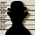
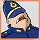

5-Reel 30-line Slots
The objective of Cops n' Bandits is to obtain winning symbol combinations by spinning the reels.
To play the game:
- Line bets are chosen by clicking + and – below Line Bet to increase or decrease the amount.
- The Cops n’ Bandits game is always played with 30 active paylines. The number of active paylines is fixed and cannot be changed by the player.
- Total bet per game round = line bet X active paylines.
- Clicking Spin spins the reels with the current selection of lines and line bets. During the reel spins the Spin button changes intoStop. Clicking Stop ends the spin animation and immediately displays the spin result.
- Reels can also be spun using the Auto Play function. Mouse over the Auto Play button to display the list of options. Select the number of spins to be played automatically or choose Until Feature to spin until a Bonus or the Free Games round is triggered. Clicking on an option starts the Auto Play function. The Auto Play button changes into Stop during the Auto Play mode. The Auto Play mode ends when the reels have been spun the number of times determined by the player, or when a Bonus or Free Games round is triggered if you chose Until Feature, or when you click Stop.
- Wins are calculated according to the paytable. Line win = line bet X corresponding multiplier according to the paytable. Scatter win = total bet X corresponding multiplier according to the paytable. The paytable can be accessed via the Info page.
- On a given payline, only the highest payline winning combination pays while simultaneous winnings on different paylines are accumulated.
- In the case of a winning spin, the Win field displays the accumulating winnings. The Win ticker can be stopped by clicking anywhere on the screen to display the total win amount immediately.
- Payline wins and the total win are also displayed on the strip located at the bottom of the reels or the game window.
Info page:
- Clicking Info opens the reference screen describing different game components. Clicking the arrow buttons at the lower right-hand corner of the screen enables navigating between the different info screens.
- The Paytable screen shows all winning combinations. When opened after a winning spin, the winning symbol combinations (number of symbols and bet multiplier) are highlighted and blink.
- The Free Games screen describes the symbol combinations necessary to trigger the Free Games feature and describes the Free Games feature rules.
- The Locked Wild Feature screen describes the rules of the Locked Wild feature.
- The Line-Up Bonus screen describes the necessary combination of symbols to enter the bonus round and describes the bonus round rules.
- The Paylines screen illustrates all possible paylines and explains the rules for calculating their wins.
- Clicking Back exits the Info screen and returns to the game.
- Active paylines are represented by lines that appear over the reels as illustrated in the Paylines screen of the Info page.
- All 30 active paylines can register wins.
- There is a difference between the line bet and the total bet. The line bet shows how much is being bet on a single payline. The total bet shows how much is being bet in total on the game round. Payouts shown in the paytable are multiplied by the line bet.
The Scatter symbol is an exception to these rules. More information about the Scatter symbol can be found below.
About payouts:
- Payouts are listed on the Paytable screen. To find the possible win amount, the line bet must be multiplied by the payout.
- If two payline winning combinations occur on the same line, the higher of them is paid out. If more than one active payline has a winning combination, the winnings are accumulated.
- Winning combinations must start from the left most reel, and the symbols have to be consecutive.
The Scatter symbol is an exception to these rules. More information about the Scatter symbol can be found below.
Maximum Win Limit
The maximum win in the game has an upper limit. For more information, see the Terms and Conditions section.
Wild symbol
The Wild symbol can stand for any other symbol, except Scatter and Bonus, to make the best possible winning combination.
There is also a separate payout for 2 or more Wild symbols on an active payline, as seen in the Paytable. This is paid out instead of the regular symbol win if the win amount from Wilds is larger than the win from the regular symbols (by Wild standing in).
Scatter symbol
The Scatter symbols do not have to occur on any particular payline. If there are 3 or more Scatters in any position in the spin results, the payout earned is multiplied by the total bet and added to payline winnings.
If 3 or more Scatter symbols appear in any position on the reels simultaneously during main game, you win Free Games. More information about Free Games can be found here.
Bonus symbol
The Bonus symbol  appears only on reels #1, #3 and #5. If the Bonus symbol appears anywhere on these reels simultaneously after a main game spin, the Line-Up Bonus is triggered. More information about the Line-Up Bonus can be found here.
To start the Bonus round, click on Click to Start.
A police line-up of 6 criminals is shown. You have to try and guess the felon, who has committed a crime, by clicking on the desired character (1 at a time). If you have chosen a wrong criminal, your cash prize bonus, shown in the Current Reward field on top of the screen, will be decreased with the cash the chosen criminal has stood for.
The start-up amount in Current Reward is always equal to the current total bet x 60. However, every wrongly picked criminal decreases your bonus reward as follows:
| Bonus reward in case of a successful next pick | |
|---|---|
| 1st successful pick | Total bet x60 |
| 2nd successful pick | Total bet x48 |
| 3rd successful pick | Total bet x38 |
| 4th successful pick | Total bet x29 |
| 5th successful pick | Total bet x24 |
| 6th successful pick | Total bet x20 |
The minimum bonus cash prize you can win will be the total bet x20. The sooner your guess of the real criminal, the higher your cash prize bonus will be.
The Line-Up bonus is available in main game only and cannot be retriggered.
At the end of the Bonus game, a win screen displays your winnings. Game win shows the winnings that were received from the main game that won the Bonus. Feature win shows the winnings that were received during the Bonus. Total Win shows the accumulated winnings (Game Win and Feature Win added up). If no winnings were received during the spin that won the Bonus, then only the Total Win field will be shown.
Click Continue to return to the main game.
If 3 Scatter symbols appear in any position on the reels simultaneously during main game, pick 1 of them by clicking on it to find out the number of Free Games awarded.
If 4 or 5 Scatter symbols appear in any position on the reels simultaneously during main game, pick 2 of them to find out the number of Free Games awarded. In this case the total number of Free Games won will represent the sum of Free Games, awarded by the 2 Scatters you have picked.
| Number of Scatters on the reels | Number of Free Games each Scatter may stand for |
|---|---|
| 3 | 15, 20, 25, 30, or 35 |
| 4 | 10, 15, 20, 25, or 30 |
| 5 | 15, 20, 25, 30, or 35 |
If the symbols of the thieves ( or ) appear on reels #2, #3 or #4 after a Free Games reel-spin, and the symbol of the cop  appears immediately right or left to either of them, the Locked Wild feature is triggered and activated with the next reel-spin. The symbols of the thieves then remain “locked” in their respective places, thus becoming Extra Wilds, until the Free Games round has ended. Extra Wilds can substitute for any other symbol, except Scatter and Bonus, to make the best possible winning combination.
To start the Free Games, click on Click to Start.
During the Free Games, the reels are spun automatically using the same number of lines and bets per line as on the spin that won the Free Games. After each spin, the win is displayed in the Win field. The Free Games Win field shows the accumulated winnings from the current Free Games.
After all Free Games have been completed, a result board summarizes the winnings. Game win shows the winnings that were received from the spin that won the free games. Feature win shows the winnings that were received during the Free Games. Total win shows the aggregate winnings (Game Win and Feature Win added up).
If Free Games are triggered during the Auto Play mode, the feature begins after the player clicks on Click to Start. When all Free Games have been played and the player clicks Continue on the screen summarizing the Free Games win, the Auto Play mode resumes. When returning to the main game, clicking anywhere on the screen stops the win ticker and displays the full prize.
Clicking Continue will return you to the main game. When returning to the main game, clicking anywhere on the screen stops the win ticker and displays the full prize. Free Game wins are added to the payline and Scatter wins.
Free Games cannot be retriggered.
Return to Player
The theoretical percentage return to player (RTP) is 95.31%.